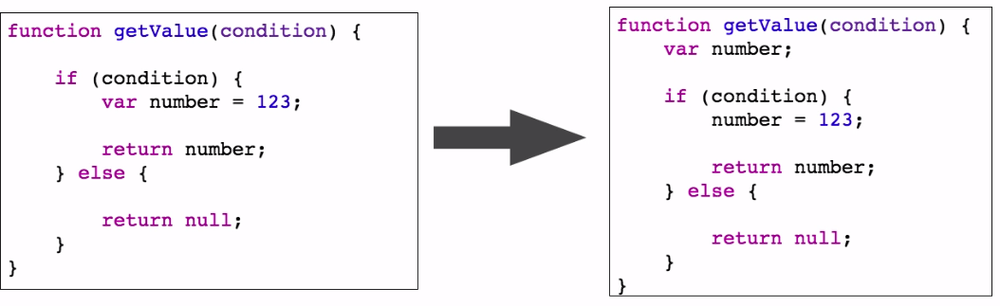

EcmaScript
- Język oraz specyfikacja do programowania aplikacji WWW po stronie klienta inspirowana językami C, Java,
Python czy Perl
- opracowana przez Brendan`a Eich`a z NetScape w 1997
- Najnowsza wersja ES6 (w przygotowaniu jest już ES 7)
- Najpopularniejsze implementacje: JavaScript, TypeScript, ActionScript
Zmienne w EcmaScript6
- Deklaracje zmiennych w JavaScript`cie może być myląca dla osób programujących w innych, gorszych, mniej
popularnych, wymierających (niepotrzebne skreślić ) językach :)
- Klasycznie zmienne tworzone są w miejscu ich deklaracji
- W ES6 mamy możliwość zadeklarowania zmiennej na kilka różnych sposobów, z których każdy ma przydatne
właściwości
Standardowa deklaracja "var"
Zmienne w czystym JavaScript`cie (ES5) deklarowane są za pomocą słowa kluczowego var tworzone są na samym
początku definicji funkcji niezależnie od miejsca ich deklaracji w kodzie. Zjawisko to nosi nazwę
hoisting`u

Zasięg zmiennych
Zmienne deklarowane przy pomocy słowa kluczowego var mają zasięg funkcyjny, natomiast zmienne deklarowane
przy pomocy słowa kluczowego let mają zasięg blokowy (zwany również leksykalnym).
Stałe
Składnia JavaScript`u została wzbogacona o jeszcze jeden sposób deklaracji zmiennych, przy pomocy słowa
kluczowego const
- Podobne właściwości do let odnośnie zasięgu oraz miejsca utworzenia
- Brak mozliwości późniejszego nadpisania, inicjalizacja nastepuje od razy przy deklaracji
Domyślne wartości argumentów funkcji
- Krótszy sposób przypisania domyslnych wartości argumentów funkcji
- Wartość undefined traktowana jako brak, null jest OK
Argument Spread
- Rozkłada tablicę na niezależne elementy
- Ułatwia przekazywanie całych tablic jako argumentów do funkcji
Pozostałe argumenty = '...'
- Elegancki sposób deklaracji, nieograniczonej ilości argumentów przy pomocy operatora ...
- Specjalny argument służy jako kontener na pozostałe argumenty
- Może występować tylko raz, jako ostatni argument
Destruktory
- Technika dekompozycji obiektów oraz tablic
- Schludniejsze operacje na obiektach
Funkcje lambda
Funkcje lambda, zwane również funkcjami strzałkowymi (arrow functions) są typem deklaracji funkcji o
specjalnych cechach.
- Cechuje je krótsza, czytelniejsza składnia
- sa anonimowe oraz tworzone bez operatora new
- nie posiadają prototypu
- dziewdzicza this po najbliższej standardowej funkcji i jej leksykalnym kontekscie
Fork me on GitHub